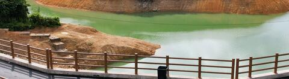
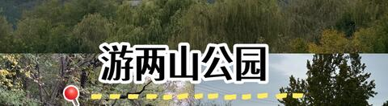
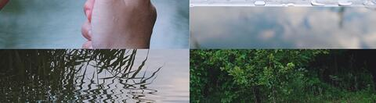

两山公园 / 三山五园绿道亲子骑行 + 颐和园西门咖啡
五月周末 · 五道口近场亲子骑行：中坞 / 北坞 / 两山公园截取三山五园绿道精华段，骑后用颐和园咖啡或西苑快餐收尾。
北京·海淀
两山公园亲子骑行
4.5h
24km
10km / 60m / 1.8h
L4 可执行
五道口出发

小红书搜索“两山公园 骑行”命中“适合低幼骑行｜三山五园春日骑行攻略”“海淀带娃骑行天花板”等笔记；这页按“亲子分段”而不是完整 36km 大环来做。

内容社区高频词集中在“北坞公园、两山公园、三山五园绿道、故宫红丝带、亲子骑行、安静无车友好线路”。核心 vibe 是田园绿道，不是景区刷点。

两山公园本体的吸引力来自“稻浪中的玉峰塔”“玉泉山借景”和一组近距离观景点；适合让毛豆做“找八景 / 找山影”的任务卡。
看图理解这条线
小红书内容流里反复出现“低幼骑行 / 带娃骑行 / 三山五园春日骑行”。这决定了本页不推荐完整三山五园大环，而是截取中坞—北坞—两山—颐和园西门的亲子安全段。
北坞 / 两山在内容平台上的气质更像“小江南 + 稻田 + 红色绿道”，适合慢骑、推行、拍照、科普，不适合追速度。
两山公园内部可把“稻浪流香、社林丰歌、苇岸桑林、御道斜阳、长河浮金、玉峰塔影”等观景点做成孩子的寻点任务。
行程卡
| 字段 | 内容 |
|---|
| 区域 | 北京·海淀，颐和园西门 / 北坞 / 中坞 / 玉东郊野公园片区 |
| 主题 | 两山公园亲子骑行 + 三山五园绿道精华段 |
| 总时长 | 4.5h；进颐和园咖啡或正餐可扩展到 5.5-6h |
| 预估自驾 | 五道口往返约 24km；也可地铁 / 西郊线到颐和园西门接入 |
| 骑行参数 | 基础线 8-10km / 约 60m / 1.5-2h；毛豆拉练版 12-16km / 2-3h |
| 强度 | 轻度到轻中度；难点不是爬升，而是周末人流、路口和热天补水 |
| 适合 | 亲子 / 10岁体力强孩子 / 想近场骑行但不想刷车多大环的人 |
| 一句话结论 | 五道口附近最像“田园绿道 + 皇家园林借景 + 骑后咖啡”的亲子半日线。 |
路线摘要
这条线的重点不是“公园里绕一圈”，而是把三山五园绿道里最适合亲子的中西段切出来：中坞 / 北坞热身，两山公园看稻田和玉泉山借景，最后用颐和园西门 / 西苑方向咖啡和正餐收尾。
🏞️ 目的地介绍
🏞️ 两山公园更准确地说是玉东郊野公园一带，位于颐和园西门以西、玉泉山以东。小红书搜索里既有“两山公园｜稻浪中的玉峰塔”，也有“海淀带娃骑行天花板｜三山五园绿道太治愈”“闹中取静｜安静无车的友好线路串行”等内容，说明它不是单点网红，而是一个由北坞、中坞、玉东、颐和园西门共同组成的亲子绿道片区。
✨ 活动介绍
🚲 骑法要克制：不要给孩子默认刷完整三山五园 36km，也不要把香山南路 / 香山路当主线。推荐把车停在颐和园西门 / 北坞中坞周边，先骑中坞和北坞做热身，再进两山公园找“稻浪流香、社林丰歌、玉峰塔影”等点。若现场提示公园内部不能骑，就改为外围绿道骑行 + 入园推行，这反而更适合周末亲子。
✨ 活动节奏
☕ 骑后收尾分两层：想要景观和仪式感，进颐和园去颐啡咖啡 / 水村居 / 宫事·隆御万寿下午茶；想要执行稳定，就去星悦荟 / 西苑方向的方砖厂69号、小大董、Peet's 或小吊梨汤。真实点评数据放在页面底部，首页只展示轻量摘要。
商户评分、评论量、人均、推荐菜、营业状态和风险统一放在页面最底部的「点评信息卡」里。
推荐行程安排
| 序号 | 活动 | 时长 | 备注 |
|---|
| 1 | 五道口出发，自驾去颐和园西门 / 北坞中坞片区 🚗 | 0.5h | 周末建议 7:20-7:45 出发；先看“颐和园西门 / 玉东郊野公园 / 北坞公园”实时停车 |
| 2 | 整车、头盔、水和任务卡 | 0.2h | 每人 1-1.5L 水；毛豆负责报点：下个路口、最近厕所、是否推行 |
| 3 | 中坞 / 北坞热身慢骑或推行 2-3km 🌾 | 0.5h | 小红书体感是“低幼友好 / 绿道治愈”，所以速度要慢，人多直接推 |
| 4 | 两山公园主段 4-5km：稻田、水系、玉泉山借景 🚲 | 0.8h | 找稻浪流香、社林丰歌、苇岸桑林、长河浮金、玉峰塔影 |
| 5 | 湖边 / 稻田 / 玉峰塔影拍照 + 三山五园科普 📷 | 0.5h | 讲万寿山、玉泉山、颐和园、京西稻；把“找八景”变成游戏 |
| 6 | 回撤或加长到船营 / 功德寺 / 影湖楼方向 | 0.5h | 毛豆状态好扩到 12-16km；热、人多或禁骑就收线 |
| 7 | 骑后咖啡 / 午饭：颐和园内或星悦荟 / 西苑 🍽️ | 1.0h | 想出片选颐啡 / 水村居；想稳妥选方砖厂69号 / 小大董 / Peet's / 小吊梨汤 |
最佳时间：上午 8:00-11:00 完成骑行，11:00 后进入吃喝阶段。高温天不要拖到午后；三山五园完整大环只留给大人版。
为什么这个方案值得保留
- 小红书真实搜索结果里，亲子骑行、低幼骑行、三山五园绿道、北坞 / 两山反复同框，vibe 很稳定。
- 点评真实数据能支撑两种收尾：园内景观咖啡和西苑 / 星悦荟稳定正餐，不再是“片区占位”。
- 它离五道口近，半日可执行，厕所、停车、快餐、咖啡、商场都在可撤退范围内。
- 可按体力伸缩：8-10km 是默认，12-16km 是毛豆拉练版，完整三山五园大环不作为亲子默认。
风险与临门一脚
- 北坞 / 中坞 / 两山内部骑行政策可能随人流变化；现场提示禁骑时不要争，改外围绿道 + 推行。
- 颐和园内咖啡需要门票，且周末可能排队；如果孩子饿了，优先去星悦荟 / 西苑快餐正餐。
- 小红书图文强调“治愈 / 亲子 / 绿道”，不是竞速路线；路口必须下车推行。
- 点评营业状态会变，临出发前复核颐啡、水村居、方砖厂、小大董等目标店。
复核入口：小红书“两山公园 骑行”、点评“北坞公园 咖啡”、点评“颐和园”。
🍽️ 点评信息卡（商户锚点）
真实大众点评登录态采集。选择逻辑：园内景观咖啡 2 个 + 骑行驿站 1 个 + 星悦荟稳定正餐 / 咖啡 3 个；临出发前复核营业、门票和排队。
★★★★★4.43687条¥55/人
颐和园咖啡
口味4.4 / 环境4.6 / 服务4.4
营业中 08:30-18:00›
有露台现磨咖啡手冲咖啡需进颐和园
📍颐和园景区内延赏斋，距澄鲜堂约140m
点评原页复核排队
- 为什么放这里
- 骑后最有仪式感的咖啡锚点：园林、池水、古建、耕织图景区都能接住“两山 / 颐和园西门”的路线气质。
- 招牌饮品
- 颐和·咖啡、老佛爷下午茶、桂花拿铁、小糕点、卡布奇诺、塞下孤霜·玛奇朵、柿子茉莉青提、金枪鱼帕尼尼。
- 好评信号
- 窗外风景宜人、中式浪漫咖啡馆、园子西北角位置、荷塘旁长廊相接、适合午后阅读。
- 风险信号
- 需要颐和园门票；周末热门，性价比评价分化；若孩子已经饿了，不如直接去星悦荟吃饭。
★★★★★4.6370条¥56/人
颐和园饮品
口味4.4 / 环境4.6 / 服务4.6
营业中 08:00-18:00›
茶饮简餐小院需进颐和园
- 为什么放这里
- 比颐啡更安静、接地气，和两山 / 京西稻 / 耕织图的主题更贴，适合骑后慢坐。
- 推荐项
- 红茶、茉莉花茶、薄荷塘、白毫银针、太后最爱甜碗子、桂花奶茶、陈皮白茶，也有拌面 / 炒饭等简餐线索。
- 好评信号
- 小院环境安静、院子晒太阳惬意、喝茶有小湖景、田园风光中享受咖啡、室内外茶座宽敞。
- 风险信号
- 位置在园内偏僻区域，需买票且要走一段；更适合不赶时间的家庭，不适合快速补能。
★★★★★4.370条¥48/人
颐和园咖啡 / 骑行驿站
口味4.2 / 环境4.3 / 服务4.3
营业中 09:00-20:00›
付费停车可带宠物旁边有卫生间骑行驿站
- 为什么放这里
- 它是真正带“骑行驿站”属性的咖啡点，适合作为加长到船营 / 闵庄方向时的中途补给。
- 推荐项
- 拿铁、美式、林隙逸筑、黄油dirty、澳白、林隙煎饼、热狗、披萨、汉堡。
- 好评信号
- 骑三山五园绿道途中偶遇、室内外都可坐、旁边就是卫生间、春天绿道氛围强。
- 风险信号
- 有评论认为部分简餐“西餐价格、家常品质”，所以更适合补给和歇脚，不适合作为高期待正餐。
★★★★★4.311641条¥40/人
颐和园炸酱面
口味4.2 / 环境4.2 / 服务4.3
营业中 10:00-21:00›
付费停车有宝宝椅星悦荟快补能
📍颐和园路龙湖星悦荟1层，近西苑站C1出口
点评原页复核排队
- 为什么放这里
- 骑后最稳定、最亲子的快正餐锚点：人均低，出餐快，有宝宝椅，孩子饿了比园内咖啡可靠。
- 推荐菜
- 招牌黑猪肉炸酱面、老北京爆肚粉、乾隆白菜、酸梅汤、手掰肠、卤煮、炸灌肠、干炸丸子。
- 团购
- 点评可见 50 元代金券、黑猪肉炸酱面一人食、老北京爆肚粉等套餐。
- 风险信号
- 热门店排队时间高频出现；饭点要么错峰，要么先点孩子能吃的。
★★★★★4.31609条¥110/人
颐和园烤鸭
口味4.2 / 环境4.4 / 服务4.4
营业中 11:00-21:30›
付费停车有宝宝椅无障碍设施适合坐下吃
📍颐和园路206号，近西苑站C2出口
点评原页复核等位
- 为什么放这里
- 如果骑完想要一顿更正式的北京菜 / 烤鸭，它比园内餐饮更可控，也更适合家庭坐下吃。
- 推荐菜
- 酥不腻烤鸭、炭烤猪颈肉、番茄脆菇沙拉、奇妙虾球、咸肉炖豆腐、芥末鸭掌、炸酱面。
- 团购
- 点评可见双人餐和四人餐团购，适合临出发前看是否还有效。
- 风险信号
- 饭点需等位；烤鸭类午餐时间更长，不适合孩子已经很饿时才决定。
★★★★★4.71466条¥41/人
颐和园咖啡
口味4.7 / 环境4.6 / 服务4.6
营业中 07:30-20:30›
付费停车星悦荟营业早稳定咖啡
📍颐和园路206号龙湖星悦荟1层206-07号
点评原页复核营业
- 为什么放这里
- 它不是最有园林氛围的，但最稳定：出园后不用买票，营业早，适合家长快速回血。
- 推荐项
- 拿铁、芝士分子拿铁、美式、云瑰拿铁、焦糖烧拿铁、澳洲小白、千层蛋糕、贝果、三明治。
- 团购
- 点评可见经典咖啡双杯和新人单杯套餐。
- 风险信号
- 连锁店氛围不如颐啡 / 水村居，但执行稳定性更高。